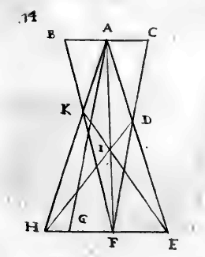

Proposition X & Lemma V: Third Perimeter Ratio (Caravaggio Proof)¶



Proposition X · Problem VIII (Tab. 1, Fig. 5)
The same figure of the Second Element being set out, and the ratios DA to AB, and DE to BC being given, it is required to make known the ratio CK to KE.*
Let the ratio DA to AB be as 2 to 3, and DE to BC as 5 to 4; because the proportion CK to KE is compounded of the ratios of weights E to A to C, namely of the straight lines AD to DE, and CB to BA; from these ratios is also compounded the rectangle of AD into CB to the rectangle of DE into BA; and these rectangles are indeed compounded also of the two ratios DA to BA, and CB to DE, that is, of the two 2 to 3, and 4 to 5; therefore DA to AB will be as 8 to 15, namely as the product of DA into CB to the product of BA into DE, which was to be shown.
The same geometrically from the aforesaid Pietro Paolo Caravaggio Jr..
Of which parts ED is 2, let CB be 5; and of which DA is 1, let AB be 3. I say that CK to KE has the same ratio which the rectangle of AD into CB has to the rectangle of ED into EB, namely as 5 to 6.
For since as AD is to DE, so is triangle ACD to triangle DCE, and as AD is to DE, so is triangle AFD to triangle DFE; therefore as AD is to DE, so will triangle ACF be to triangle FCE. Similarly, as CB is to BA, so will triangle EFC be to triangle EFA; therefore triangle AFC to triangle AFE has the ratio compounded of AD to DE, and CB to BA; but as triangle AFC is to triangle AFE, so is CK to KE; therefore CK to KE has the ratio compounded
f. 0033 · p. 16of AD to DE, and CB to BA; but of the same ratios is compounded the ratio which the rectangle of AD into BC has to the rectangle of DE into BA; therefore as the rectangle of AD into BC is to the rectangle of DE into BA, so is CK to KE, which was to be shown.
I myself accomplished the same geometrically when Caravaggio’s solution had not yet been imparted to me, having premised the following lemma.
Lemma V (Tab. 2, Fig. 13)
Let there be a triangle ABD, in which lines DGI, BGH, AGC intersect one another at G; and from point A let FE be drawn parallel to BD meeting the lines CIF and CHE at points F and E; I say that the straight line FA is equal to AE.*
Let BH and DI be produced until they meet the line LK at K and L. Since DC to LA is as CG to GA, and as CG is to GA, so is BC to AK, it will be as DC to LA, so BC to AK, and alternating, DC to CB as LA to AK. Again, because CD to AE is as CH to HE, and as CH is to HE, so is BC to EK, CD to AE will be as BC to EK; and alternating, CD to CB will be as AE to EK: finally, since similarly CD to CB is as LF to FA, the three ratios LA to AK, AE to EK, and LF to FA will be similar to the same CD to CB, and therefore also to one another; thus since as LF is to FA, so is AE to EK, and by composition as LA to AF, so AK to EK, by alternation it will be as LA to AK, so AF to EK; but as LA to AK, so is also AE to EK; therefore as AF is to EK, so AE to the same EK; therefore FA and AE are equal, which was to be shown.
Let triangle AHE be given, and in it let lines EK, FA, HD intersect one another at I; and then, the ratios AK to AD and KH to DE being given in numbers, let it be required to investigate the ratio EF to FH.* (Tab. 2, Fig. 14)
Let a straight line BC be drawn from point A parallel to HE; and let the straight lines FB, FC drawn from point F through K, D cut BC at points B, C, and finally from A let the straight line AG be drawn parallel to CF meeting EH produced at G.
Since GA is parallel to FC, and AC is parallel to GF, AF will be a parallelogram, and GF will be equal to AC, that is, to AB; since
f. 0034 · p. 17therefore the ratio EF to FH is compounded of the two ratios EF to FG, and FG to FH, and as EF is to FG, so is ED to DA, and as FG, that is AB, is to FH, so is AK to KH, the ratio EF to FH will be compounded of the two ratios ED to DA, and AK to KH; but of the same is compounded the ratio of the rectangle of AK into DE to the rectangle of KH into AD, or of these other two KA to AD, and DE to HK; therefore EF to FH is also compounded of the same ratios KA to AD, and DE to KH, which since they are given, the ratio EF to FH will be manifest, which was to be shown.